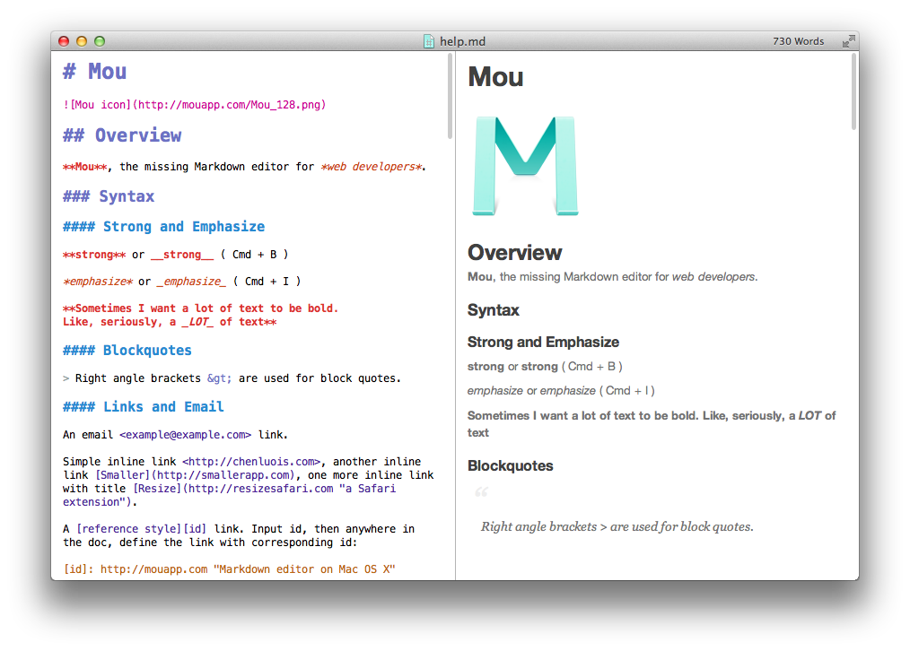
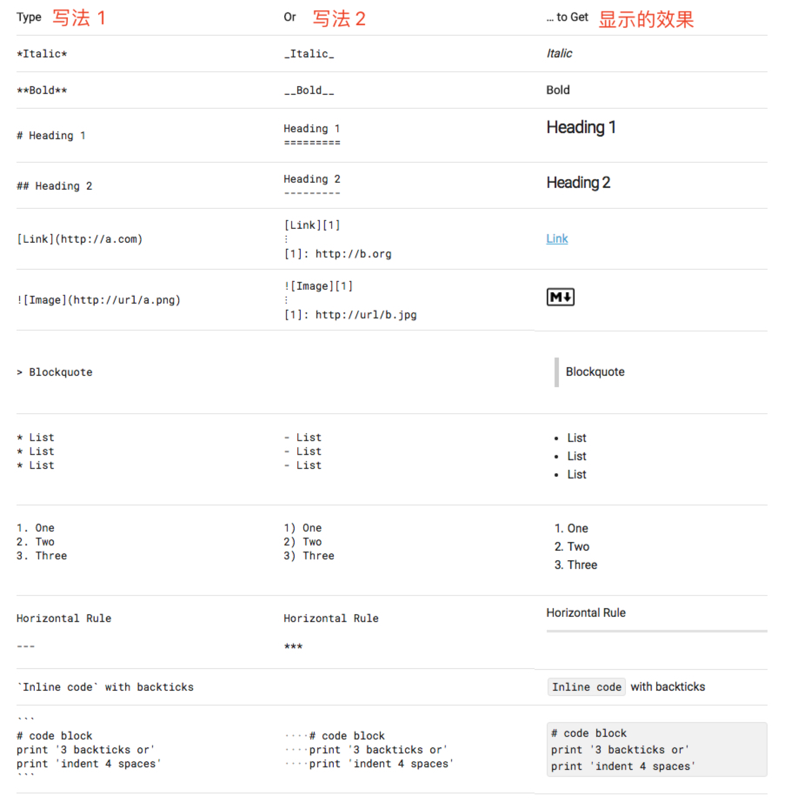
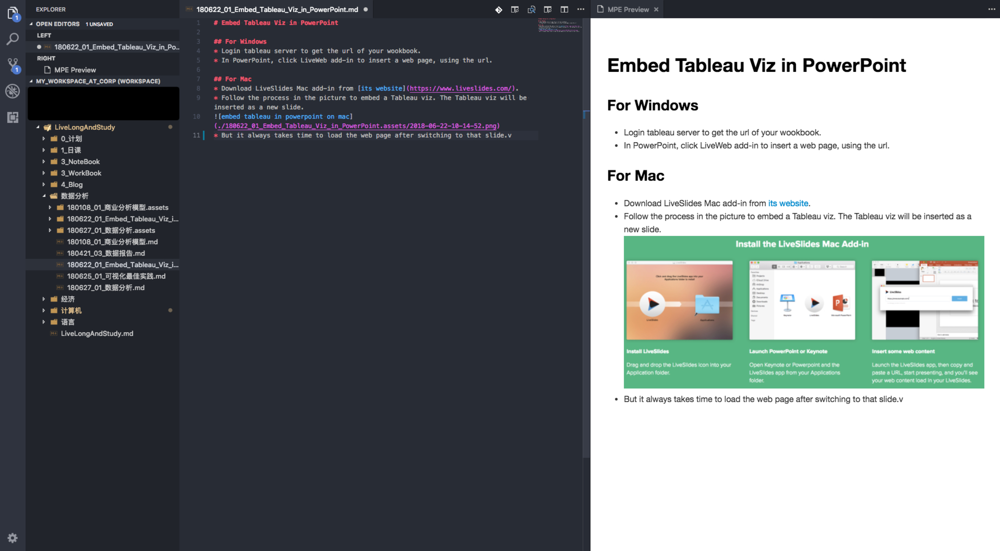
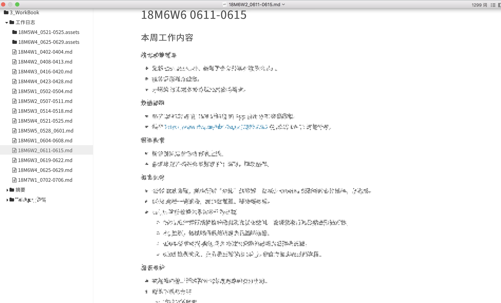
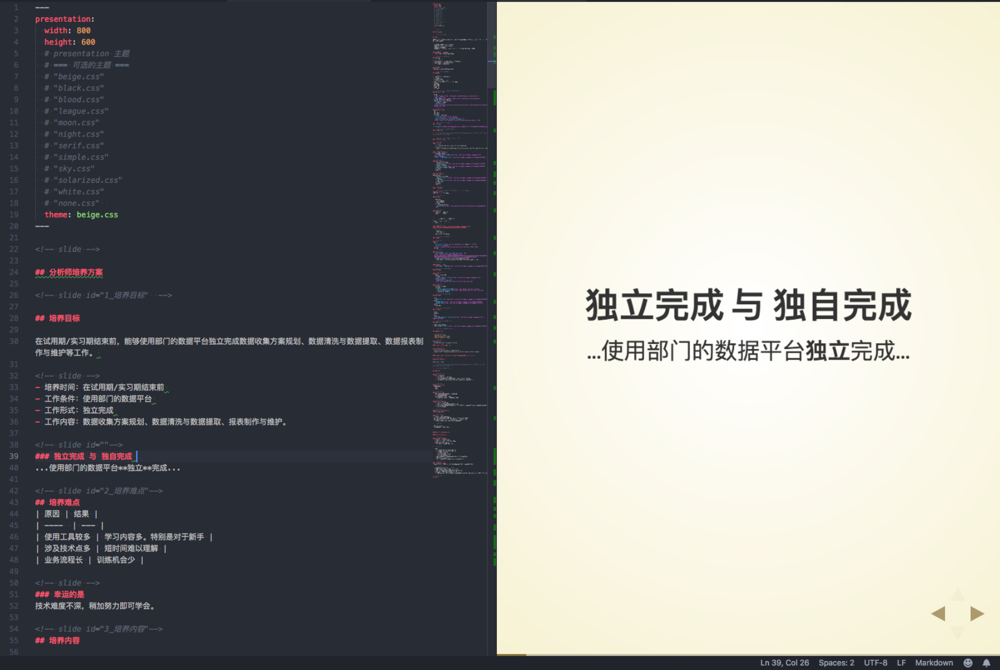

优秀的 Markdown 工程师
Why Markdown
作为一种轻量级标记语言 Markdown 使用者自然不是什么工程师，这只是我抄袭来的戏谑说法。否则世界上就会有 HTML 工程师，Word 工程师了。但是，能够使用 Markdown 快速格式化文本，任何一位小白都会感受到程序（或者说自动化）的伟力。
简单地说，使用 Markdown 编写图文混排的文档时，编辑器会按照文字中的 Markdown 标记自动设置文本格式，免去了像 Word 中那样的逐条手动设置。输入即所得。
比如下图中的 Markdown 编辑器 Mou，左侧栏是键盘输入的文本，右侧栏则是编辑器实时渲染的文档格式。

显而易见地，Markdown 的优点有：语法简单，格式化操作简便，支持常用的多级标题、粗体、引用等格式。图中语法类型看起来多且花哨，实际上常用的只有下面的 12 种。

Markdown 适合谁？
Markdown 适合几乎所有有书写记录需求的人。毫不夸张。
作家可以用它写作，程序员可以用它写文档，所有人可以拿来记笔记日记。
标记语言的设计哲学就是信息的显示形式与信息本身分离。换句话说，使用者只需专心于内容，包括文本格式在内的内容的展示形式全部由程序自动完成，且展示的形式可以通过配置文件来批量修改。只要有过重复修改十几个标题的格式的经历，你就可能喜欢上 Markdown。
Markdown 做不到的
Markdown 做不到的事情比做得到多得多，比如字体颜色、复杂的图文混排等 word 里常见的功能。Markdown 只负责最常用的格式设置，而我们平常也不需要那些不常用的格式设置。比如，图片嵌入文本行这种功能非印刷出版物基本没有必要使用，切换字体和颜色又不适合在稍微正式的场合或追求简洁的文档里使用。
这些做不到的，反而不是缺点，而是 Markdown 的优点。只有核心功能，避免用户做“蠢事”。
Markdown 的强大之处
插件！如果你有额外的功能需求，而原生 Markdown 不支持，你就需要一个插件了。常用的插件有数学格式、文档目录、打印成PDF、制作演示文档等。
而本文的目的，就是给大家展示一种 Markdown 编辑器配置方案。这套方案解决了我对文档编写的大部分需求。
如何选择 Markdown 编辑器？
虽然你可能是第一次听说 Markdown，但是请放心，Markdown 编辑器之多，足以令人咋舌。其中优异者就至少有十余种之多。在这个 Office 还是 WPS、MacOS 还是 Windows、微信还是微信的“丰富”年代，只有深受开源社区喜爱且久经考验的 Markdown 才能给人带来眼花缭乱之感，和选择困难症。
按个人书写需求进行选择，肯定会有合适的。
而我的选择是 Visual Studio Code + Markdown 插件。
我的选择目标
- 免费：能不用钱解决且基本完美的，就不要用钱。
- 跨平台：爱折腾的或者不幸公司电脑和个人家庭电脑分属多个操作系统阵营的，都必须考虑这个问题。
- 插图方便：人生别无所求，能偶尔插入图片即可。
- 保留扩展的可能性：保留作的空间。
所以我的选择范围就局限于各大跨平台免费文本编辑器，而且还是有众多插件的那种。
历经好看的 Atom，简单又牛逼的 Sublime，一堆支持 Markdown 的跨平台商业软件，我最终选择了 Visual Studio Code。
VS Code 不但满足我的 Markdown 需求，且满足我的工作需求，达成单一工具满足尽可能多的成就。
接下来，我展示一下我的简单的配置，以及这样的配置能够达到的效果。
配置情况
- 软件本体：Visual Studio Code
- 插件：
- Markdown Preview Enhanced：瑞士军刀式的工具（必须用）。
- markdownlint：markdown “语法”检查，用于确保格式统一（选用）。
- Paste Image 快速地插图。
使用场景
场景一：笔记
笔记文档、笔记内容、笔记效果，一目了然。
配置好 Paste Image 的存储目录为当前文件夹，可以整齐地管理每一份笔记的插图。截图完毕后，按一下快捷键就可以将剪贴板里的图片插入文档，且保留一份到笔记目录里。

场景二：工作日志
工作日志我选择在 Typora下只打开笔记里的工作日志目录。将 Typora 的插图路径设置得和 VS Code 里一样，2 个软件毫无冲突

场景三：Blog
因为维护了一个十分一般的个人博客，博客撰写工具则十分必要。Hexo 博客框架支持 Markdown，可以轻松地将笔记文件稍加调整，就可以发布到博客上。场景一的截图里就包含了博客文章目录。
没错，你正在阅读的这篇博文就是这么诞生的。
场景四：轻量演示文稿
超过 5 页的演示文稿，还是建议使用 PPT 或者 Keynote。但是为了一个小小的内容，劳神做一个演示文稿也是讨厌的。好在 revealjs 可以将 markdown 转换为演示文稿。
幸运的是，Markdown Preview Enhanced 包含了这个功能，只需要在分页位置加一行标记即可生成一页文稿，且可以实时预览，十分方便。最后还可以将演示文稿以网页形式导出打包，发送给其他人。

场景五：程序文档
只要公司的文档系统支持 markdown，完全可以在本地写好后再一次性复制上去。唯一麻烦的就是要替换所有的图片路径。好在程序文档很少使用图片。
版本管理
笔记版本管理已经是笔记软件的必备功能，不过可能是收费功能。不过我们有 Git 啊！VS Code 内置 Git 插件。虽然手动保存版本麻烦一些，但是可以帮助我们回顾这一次我写了什么。总结能力很重要，总结总结的能力也重要。
目前我的文档都托管在免费的 Bitbucket 上，可以轻松地在手机端、iPad 端、网页端、PC 端访问到。而且哪怕 Bitbucket 突然崩溃，我也不怕用不了软件。也不用担心不靠谱的小软件厂商可以把内容同步到黑洞里的同步功能。
获得更多的功能
- 装几个插件，处理好插件之间的关系，笔记的功能就会越多。比如插入表格、插入目录、输出成书籍格式。
- 只要有 Git，思维导图之类的偏门格式也可以实现版本管理，而不需要为了一个功能而付费使用高级版本的。
鉴于网上优秀的 markdown 使用案例数不胜数，也就不提供资源了。